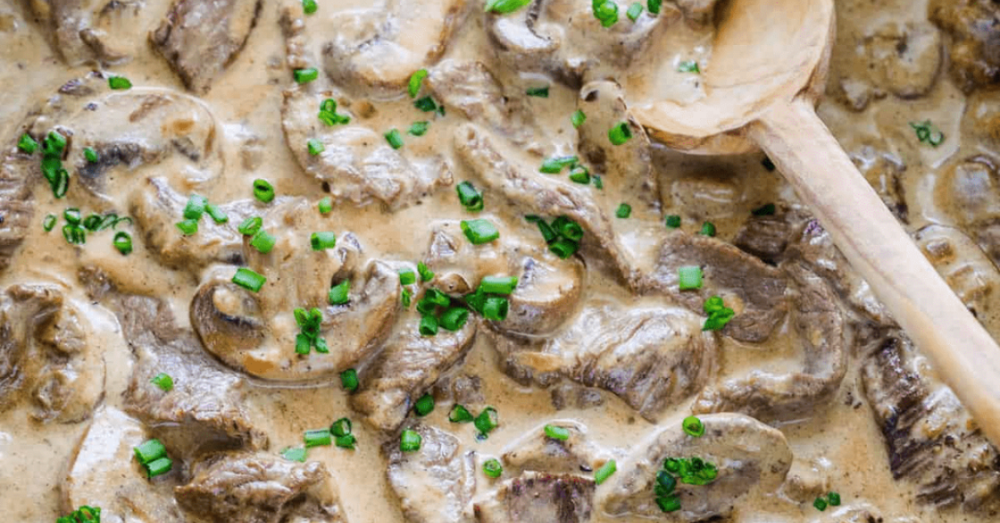

Beef Stroganoff

Description
Ingredients
- 600g of scotch fillet steak
- 2 tbsp of vegetable oil
- 1 large onion
- 300g of mushrooms
- 40g of butter
- 2 tbsp of flour
- 2 cups of beef broth
- 1 tbsp of Dijon mustard
- 150 ml or sour cream
- Salt and pepper
Steps
- Cut steak into slices.
- Season steak.
- Add oil to skillet over high heat. Cook until Brown.
- Add butter and onions, cook for 1 minute, then add mushrooms, cook until Golden brown.
- Add flour and broth, cook, stir until all is incorporated.
- Bring to simmer then reduce to medium low heat. Once thickened add salt and pepper to taste.
- Serve over Potato Gems like a fucking Sick Cunt.